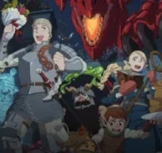
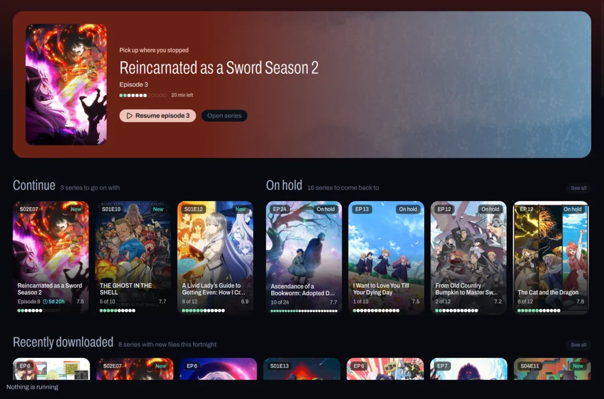

Dungeon Meshi
Watching
Episode 7 of 24
Point AniBeam at the folder your shows live in. It finds every series, matches it on AniList, plays episodes right in the window and keeps your list up to date.
Free and open source. Linux, Windows, Mac and Android.
Sousou no Frieren/Frieren - 01.mkvSousou no Frieren28 episodesDungeon Meshi/Dungeon Meshi - 07.mkvDungeon Meshi24 episodesBocchi the Rock/Bocchi - 12.mkvBocchi the Rock!12 episodesKusuriya/Kusuriya no Hitorigoto - 03.mkvKusuriya no Hitorigoto24 episodesVinland Saga S2/Vinland Saga - 18.mkvVINLAND SAGA Season 224 episodesMovies/Suzume (2022).mkvSuzume no TojimariFilm
Home picks up where you left off and shows what just landed in your folder. Try the other screens.
Watch most of an episode and AniBeam marks it on AniList or MyAnimeList. Change something on the site and the cards here follow, so the list you already keep stays the one that counts.
Tracking is optional. Everything else works without an account.
For most shows the player knows where the opening and ending sit, so Skip intro shows up right as they start. It remembers where you stopped, and offers the next episode when this one ends.
Built on mpv. Press ? for every key.
Subscribe to a show once and each new episode downloads as it airs, then lands in your library on its own.
AniBeam ships with no sources. It downloads nothing until you add the ones you trust.
Catppuccin, Gruvbox, Tokyo Night, Nord, Kanagawa and the rest come built in. Drop your own into a folder and it shows up in the list. Try a few.

AniBeam is a desktop app. There is no server to run and nothing to sign up for.
The newest version is on the releases page.
On Arch: yay -S anibeam-bin
The AppImage runs on Ubuntu 24.04, Debian 13, Fedora 40 and later. Make it executable, then open it.
Windows 10 and 11. Installs for you alone, no admin prompt. If SmartScreen stops it, click More info, then Run anyway.
With Homebrew: brew install --cask marcusbandit/anibeam/anibeam
macOS 15 and later, Apple silicon. The first launch asks once: System Settings, Privacy & Security, Open Anyway.
Sideload it. It tracks to the same AniList or MyAnimeList account as your computer.
After that, AniBeam updates itself.
Click Add a folder on Home and pick your anime folder. One folder per show works best.
Settings, Library, Trackers, Connect. Approve AniBeam in the browser and your list comes along. You can skip this.
Click a show, then an episode. Space plays and pauses.
Add an endpoint repo in Settings, Downloads, install the sources you want, then subscribe to a show. Also optional.
Free and open source, on Linux, Windows, Mac and Android.